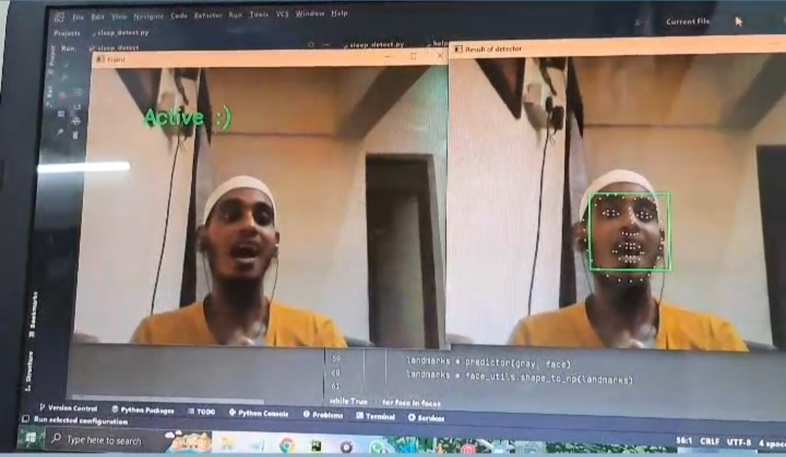

In view of the problems existing in traditional irrigation, such as high time cost, poor reliability, waste of water resources. The intelligent irrigation system based on STM32 and BC95 is designed and implemented. The soil information is received through temperature sensor and humidity sensor, which is sent from the sampling node to the remote terminal serial port. The controller sends the signal to the output end for intelligent irrigation. The practice shows that the wireless communication mode of data transmission using STM32 and NB-IoT (narrow band-internet of things) technology can meet the requirements of reducing the time cost and enhancing the reliability of the system, and can meet the goal of data transmission of intelligent irrigation system and water-saving irrigation. it can be seen that the soil moisture data in the figure significantly changes.
Our group decided to conduct the project into 4 cases:
The number of fatalities on the road due to drowsiness is very high. Thus python allows the model of deep learning algorithm via including the use of OpenCV. Drowsiness Detection is the detection of a person to check whether the person is feeling sleepy while performing a significant task. This detection has many applications in medical and safety fields. This detection can be quickly done using “shape predictor face landmarks” that mark the essential landmarks on the face.
Thus python also provides the flexibility for detecting such serious and significant detection via OpenCV modules. One can easily make their own phone camera for detecting drowsiness with the below-provided code in python.
In this project we are building a Line Follower and Obstacle Avoiding Robot using Arduino. It is an automatic small car which follows a black line while avoiding obstacles. Here, the line detection is done by IR Sensors and Ultrasonic Sensor is attached to the servo motor which detects obstacles. All the sensors and motors are controlled by Arduino UNO and L293D Motor Driver Bridge. Note: This project is based on motor control along with detection. So it will take few to many many trial and errors until the car works good.
The Arduino UNO is a microcontroller board based on the ATmega328P. It is an open-source platform that allows for easy programming and prototyping of electronic projects. In this project, the IR Sensor and Ultrasonic Sensor,” the Arduino UNO serves as the brain of the robot car, controlling the movement of the motors and processing the sensor data. The Arduino UNO reads the input from the IR sensors, which are used for line following, and Ultrasonic sensor, which is used for obstacle detection and avoidance. Based on the sensor input, the Arduino UNO sends the appropriate signals to the motors to control the robot’s movement. The Arduino UNO provides the flexibility and ease of use needed for this type of project, and similar projects in the field of robotics and automation.
An Infrared (IR) sensor is a device that detects the presence of IR radiation. IR sensors are commonly used in a variety of applications, including remote controls, object detection, and line following. In this project, the IR Sensor and Ultrasonic Sensor,” the IR sensors are used to detect the presence of a black line on a white surface. The robot car follows the line using the information provided by the IR sensors. The IR sensor has an IR LED that emits infrared light and a photodiode that detects the reflected light. When the IR LED emits light, it reflects back from the surface and the photodiode detects the reflected light. Depending on the reflectivity of the surface, the amount of light detected by the photodiode varies, and this variation is used to determine whether the robot is on the line or not. The use of IR sensors in this project makes the robot car capable of following a line with high precision and accuracy.